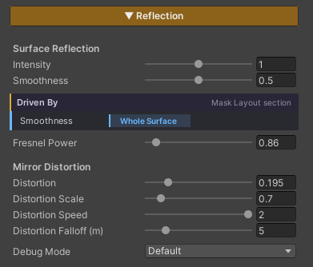
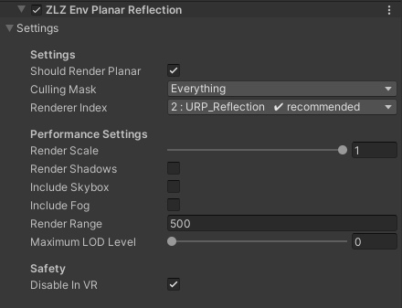

Planar Reflection
Mirror the real scene onto a surface — wet stone after rain, polished marble in a palace hall, asphalt that has not dried yet. You see the walls, the pillars and the character standing there reflected properly, not the vague coloured blur a Reflection Probe gives you.
It works by placing a second camera mirrored across the plane and drawing the scene again from there. The result matches the real scene every frame: something moves, its reflection moves with it.
Because it draws the scene a second time, the cost is the whole point of the design — so the package ships a renderer tuned for exactly that pass, which is what keeps this feature usable at all.
Showcase Planar Reflection
Reflection Comes in Two Tiers
Reflection in the Env Shader is two layers stacked on each other :
| Tier | Source | State |
|---|---|---|
| Reflection Probe | probes baked into the scene | always on, cannot be disabled |
| Planar Reflection | a mirror camera redrawing the scene in real time | toggled from the Features grid |
The Probe tier works for free with nothing to configure. Planar Reflection is the tier that layers on top of it when you want a reflection that is sharp and true to the scene.
If a surface does not need mirror-grade sharpness, the Reflection Probe alone is usually enough — and it costs nothing extra.
Setup
Planar Reflection needs both halves. Miss either one and no reflection appears at all.
- On the material — turn on the Reflection feature in the Features grid at the top of the Inspector
- On the URP Renderer — the Renderer Feature
ZLZ Env Planar Reflectionhas to be in the list
Once the material side is on, the Reflection section appears in the Inspector with every value described below.
Parameters — Material

Surface Reflection
- Intensity (default
1) — how strongly the reflection blends onto the surface. Higher = the mirror image reads clearly, lower = it sinks back into the surface’s own colour - Smoothness (default
0.5) — how polished the surface is. High = glass-flat, a crisp mirror. Low = matte, the reflection scatters and softens
Driven By
Chooses where on the surface the reflection appears.
- Smoothness — reads the Smoothness channel of the Feature Mask, so only the areas you painted reflect. This is the one for patchy wet ground, like puddles across a road
- Whole Surface — the entire surface reflects evenly, no mask needed
Smoothness mode needs a Feature Mask assigned in the Mask Layout section first. If you have not packed one yet, use Whole Surface for now.
- Fresnel Power (default
0.86) — how much stronger the reflection gets at grazing angles. Wet ground seen from low down really does reflect harder than seen from straight above; this sets how steep that falloff is
Mirror Distortion
This group makes the reflection ripple instead of sitting there as a dead-flat mirror — it is what sells the idea that a thin film of water is actually lying on the surface.
- Distortion (default
0.195) — strength of the warp.0= a perfectly flat mirror; higher = the reflection wobbles more - Distortion Scale (default
0.7) — size of the ripple pattern. Low = broad rolling waves, high = tight small ripples - Distortion Speed (default
2) — how fast the ripples travel. Set0to freeze them in place - Distortion Falloff (m) (default
5) — the distance in metres over which the warp fades out. Ripples stay visible near the camera and settle down further away, which keeps distant reflections from breaking up into flickering noise
Debug Mode
A dropdown for inspecting the reflection in isolation while tuning. Default is the normal, final result.
Parameters — Renderer Feature

This section lives on the URP Renderer, not on a material — so what you set here applies to every material using Planar Reflection in the scene at once.
Settings
- Should Render Planar — the master switch for the whole system. Turn it off and the mirror camera never draws, which makes it an instant before / after comparison, or a way to park the cost while profiling
- Culling Mask (default
Everything) — which Layers are allowed to appear in the reflection. This is where the biggest savings are : drop the effects, the dust, the small props nobody can pick out in a reflection anyway, and the second pass immediately has less to draw - Renderer Index (recommended
URP_Reflection) — which Renderer in the URP Asset the mirror camera draws with. Point it atURP_Reflection, which ships with the package and is tuned for this job specifically, light enough to run on Mobile. A✔ recommendedbadge appears once you have picked the right one
Performance Settings
Everything in this group exists to cut the cost of that second pass. The defaults are already set on the frugal side.
- Render Scale (default
1) — resolution of the reflection.1= full resolution; dropping it softens the mirror image but speeds things up noticeably. This is the first value to try when you need frames back - Render Shadows (default off) — whether shadows are drawn into the reflection. Normally off, because shadows in a reflection are barely noticeable and expensive
- Include Skybox (default off) — whether the reflection carries the sky. Turn it on when the surface faces open sky directly, like an outdoor plaza floor
- Include Fog (default off) — whether scene fog affects the reflection. Turn it on when the scene’s fog is heavy enough that an unfogged reflection looks detached from it
- Render Range (default
500) — how far the mirror camera can see. Anything beyond this is left out of the reflection, so trimming it to fit your scene cuts real work - Maximum LOD Level (default
0) — forces objects in the reflection onto coarser LODs, so the second pass draws lighter versions of your models
Suggested order when you need frames back : trim the Culling Mask first → lower Render Range → lower Render Scale → then reach for Maximum LOD Level. The first three cut work with almost no effect on what the player actually sees.
Safety
- Disable In VR (default on) — switches Planar Reflection off automatically under VR, because redrawing the scene in stereo costs twice over. Leave this on
Limits
- The Renderer Feature is never optional — turning the feature on in the material is not enough. Without
ZLZ Env Planar Reflectionon the URP Renderer, no reflection appears - The mirror camera renders against a fixed plane — Planar Reflection suits surfaces that are flat. Something curved or heavily broken up will reflect in ways that do not match reality; reach for a Reflection Probe there instead
- It costs one more pass over the scene — drawing the scene twice is the reason Planar Reflection is usually written off as impractical. ZLZ Env Shader ships a purpose-built renderer for it that brings the second pass down to 2–5%, which is what makes it viable on Mobile
- VR is off by default, via the Disable In VR switch
- Cameras rendering to a Render Texture are skipped, as are preview cameras and reflection probes — the mirror camera never stacks on top of those